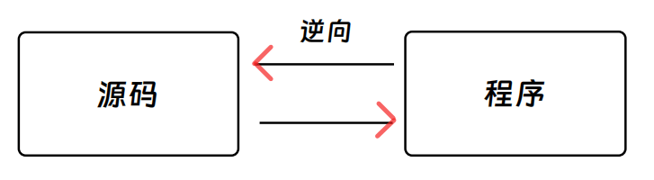

引导篇：灵魂 FAQ¶
本章节将会通过三个问题作为切入点，向你介绍关于 CTF 中的逆向工程(Reserve)的一些基本情况：是什么？有什么？怎么做？
1.是什么？🤨¶
你说得对，但逆向工程一般指软件逆向工程，即对 广义 下的 目标文件 进行分析（如可执行文件及其链接库），通过反汇编工具查看文件机器码对应的汇编块，研究程序的行为和算法，然后以此为依据，通过一系列操作得出出题人想要隐藏的 flag。
当然，这只是通俗易懂的针对 CTF 比赛的解释，实战中的逆向工程，会涉及到更多方面，解释也会更加复杂，这里不再赘述。
这里的目标文件可不是.o文件哦~
在ELF文件格式规范中，ELF文件被统称为Object file，这与我们通常理解的.o文件不一样。
因此当提及目标文件的时候，按照规范这里指的就是各种类型的ELF文件。
不过为了降低理解成本，我们这里定义的是 广义 上的目标文件，即大部分与COFF相关的文件。
如果你不知道有哪些，以下是一些常见例子：ELF文件，PE文件……
为了与.o文件区分，我们将.o文件直接称为 可重定位文件 。
需要注意的是，虽然这里的目标文件和可执行文件有细微的差异，但是一般不会影响RE的初学者做题。
所以我们索性直接将其称为 可执行文件 ，你只需要在做相关概念题的时候稍微区分一下就好(?)。

💡 Tips：建议去了解一下这些目标文件，本板块中并不会对这些进行详细解释，接下来我们会直接将其称之为 可执行文件 。
2.有什么？🧐¶
逆向类题目是 CTF 中变数较多的题型，现已覆盖 Windows 逆向、Linux 逆向和 Android 逆向，再加上 Flash 逆向、Python 逆向、.NET 逆向、ARM 逆向，Lua逆向等。
目前主流的逆向文件平台有 Windows 和 Linux，这两个平台的逆向工程发展时间最久，其可变灵活度也很高，所以目前 CTF 中的逆向题目也就自然而然地呈现出其灵活多变的特点。
CTF 中给出的题目常见形式有 ELF 可执行文件、exe 文件、dll 文件、so文件等。同时，也不乏有直接将一段汇编代码塞到 txt 里直接丢给你的情况。以上这些在后续的例题中也会随之讲到。
以上这些文件形式中还会出现各种各样的代码保护方式：混淆、花指令、加壳、复杂算法、复杂汇编等。毕竟如果作为程序编写者，我们也不希望自己的程序源代码就轻而易举的被获取，所以我们需要想办法突破这些障碍，去拿到我们想要的 flag 字符串。
3.怎么做？🤔¶
目前，从我个人观点来讲，在进行 CTF 逆向时，我们需要做到以下方面的准备：Tool(工具)、Language(语言)、Stick [肝(坚持)]，简称 TLS 传输层安全协议(bushi) TLS，如果非要多加一个那就是 Observation and Analysis(代码分析能力)。
Tool : 指在进行逆向分析时所需要用到的软件，我们常见的有 Detect It Easy(简称DIE)、IDA、GDB、Ollydbg(简称 OD)、Cheat Engine(简称 CE)等。
这些工具的用法在后面的章节中都会教大家如何 Quick Start。
请时刻记得
不顺手的工具终究只会是负担。
Language : 兄弟，你知道我想说什么。语言 这个词在这里提出来，那肯定不是单纯的英语了，这里指的是 计算机语言 。
在进行逆向工程的过程中，我们难免要编写一些脚本去计算或者模拟出题人给我们的一些过程，从而去获取我们想要的 flag。
最常见也最常用的编程语言就是 Python 和 C/C++ ，其次是 Java。
除去现代的这些高级编程语言，还有一门相对底层一些的编程语言比较重要，那就是汇编语言(Assembly Language，简称 ASM)：汇编语言是第二代计算机语言，在早期的编程环境中很常用，相比起二进制机器码(机器语言)而言，汇编语言因为引入了“助记符”的概念，比较让人容易看懂，同时因为其和二进制机器码可以直接对应，几乎所有的目标文件都可以翻译成汇编指令。（搞嵌入式的同学可能会经常搞这些）
请注意：汇编语言并不是某一种语言
汇编语言其实是一类语言的合集，根据不同的处理器架构（比如X86汇编和ARM汇编），我们可以写出不同的汇编语句。
在 CTF 逆向中，我们需要面临的有 x86 汇编和 x86-64 汇编(后者简称x64汇编)，也即 32 位汇编和 64 位汇编；两者虽然同为汇编语言，但是它们之间还是存在一些差别的，所以在学习的时候两个都不能有过于倾向的情况，都要认真去学习。
在后面的章节中，我会提到一些关于 ASM 的 Quick Start 方法。
Stick : 这个就不多说了吧，原神玩家最清楚这种体验 () 。对于 re 手来说，一次看几万行代码的情况，很常见。这种高强度的折磨对于没有耐心的小伙伴来说简直是虐待，在这种情况下你要盯着屏幕一直看，还要保持细心和睿智。所以很多 re 手比较 擅长摸鱼发呆(bushi) 沉稳和精明。
4.章节总结 😆¶
本章主要介绍了 CTF 中逆向工程方向的一些基本情况，目的是 劝退各位✌ 带各位大致了解一下 CTF 中的逆向工程是什么样子的，以及之后的学习方向都有哪些。如果有错误请及时指出哟~